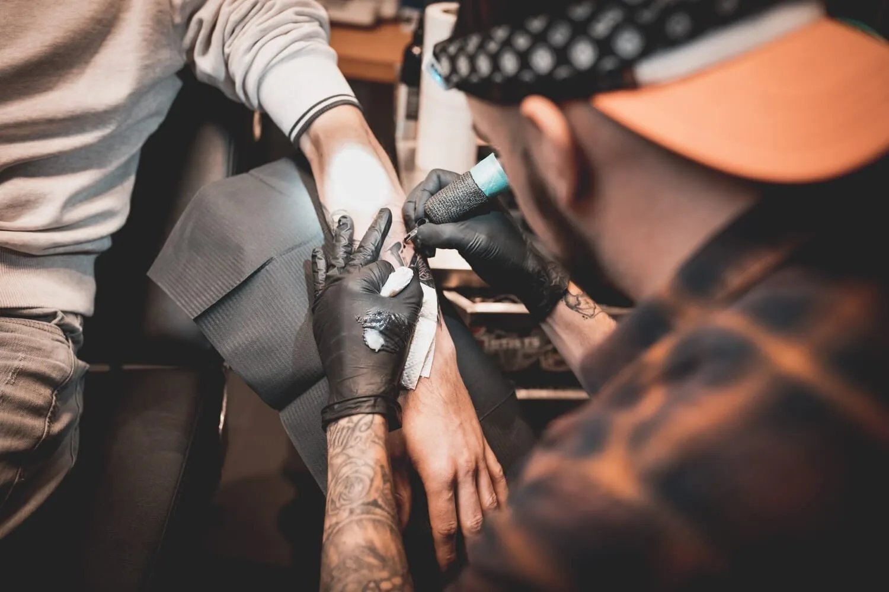
Ontworpen voor jou. Gezet voor altijd.
Van een fijn lijntje op je enkel tot een volledige Mario op je onderarm. Elke tattoo wordt voor jou getekend, en we nemen de tijd tot hij helemaal klopt.
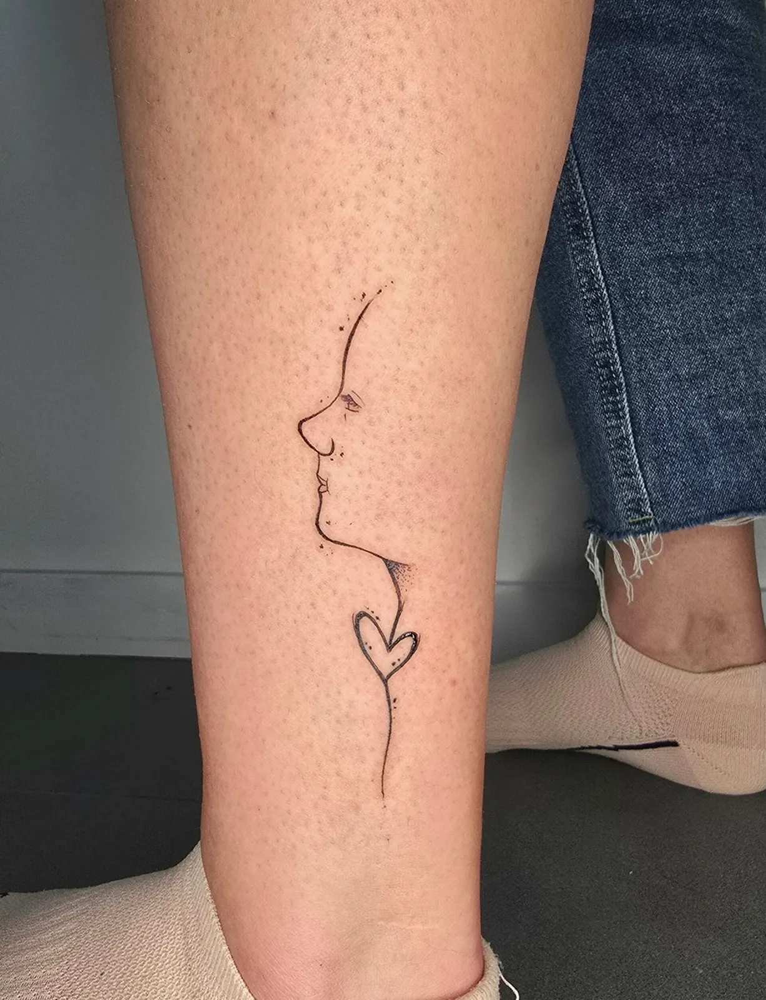
Gemiddelde score uit 53 reviews
Getekend op maatElk ontwerp wordt voor jou uitgewerkt
Fine line tot realismeVan een klein symbool tot een volle mouw
Proper en sterielEen ruimte ingericht op hygiëne en focus
Geen haastEerst rustig je idee bespreken
Klein en subtiel. Of groot en gedetailleerd.
Waar je ook mee binnenkomt: een tekening, een foto van je hond of gewoon een gevoel. We werken het uit voor jouw lichaam en de plek waar hij moet komen.
- 01
Fine line
Dunne lijnen, kleine symbolen, een gezicht in één doorlopende lijn.
- 02
Black & grey
Dieren, figuren en ornamenten in zachte grijstinten, met diepte en schaduw.
- 03
Realisme
Portretten en gezichten die echt lijken, zoals de vrouw die half leeuw wordt.
- 04
Films, games & cartoons
Mario, Chucky, een Gremlin of die ene Minion. Je favoriete figuur, voor altijd bij je.
- 05
Bloemen
Rozen, lotussen en bloemen die meebewegen met je schouder of arm.
- 06
Kleur
Waar het ontwerp erom vraagt, komt er kleur bij. Fel of net heel zacht.
Een greep uit
het werk
Elk stuk hieronder werd in de studio getekend en gezet. Geen twee dezelfde, want geen twee mensen zijn dezelfde.
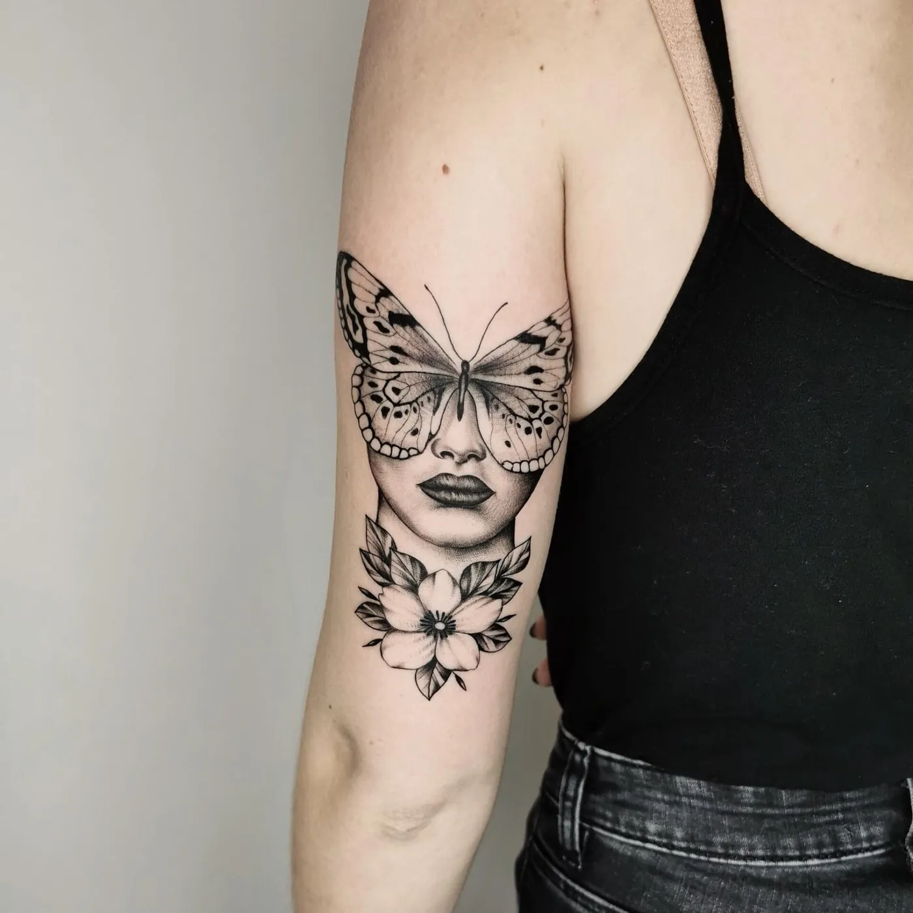
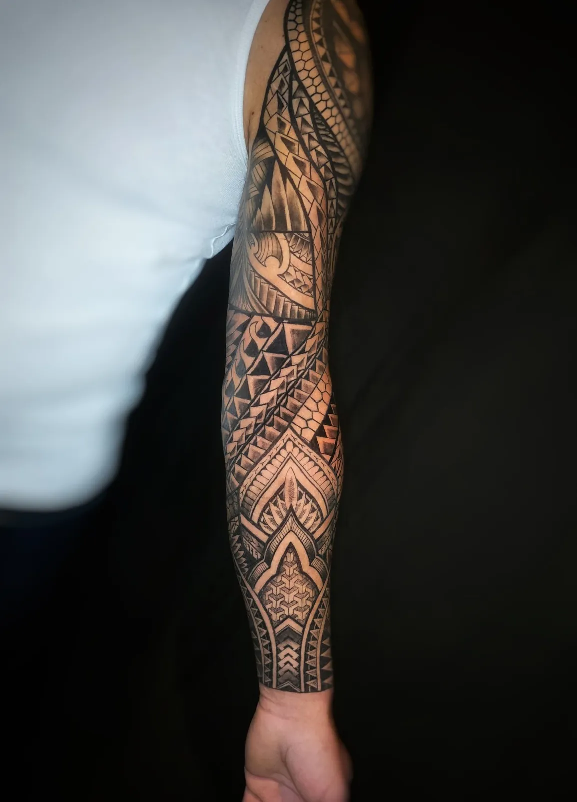
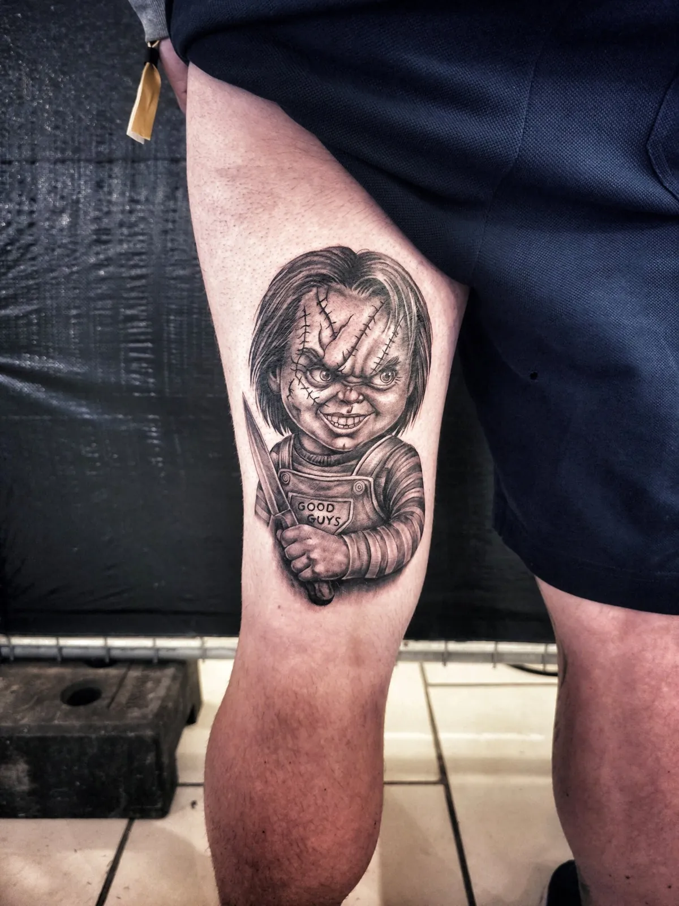
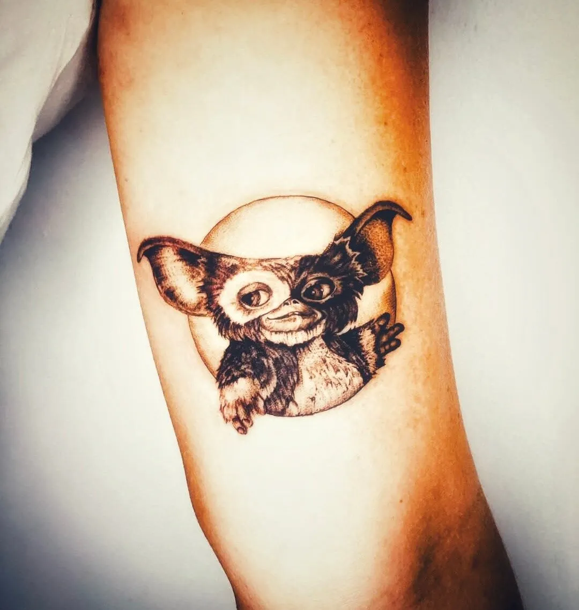
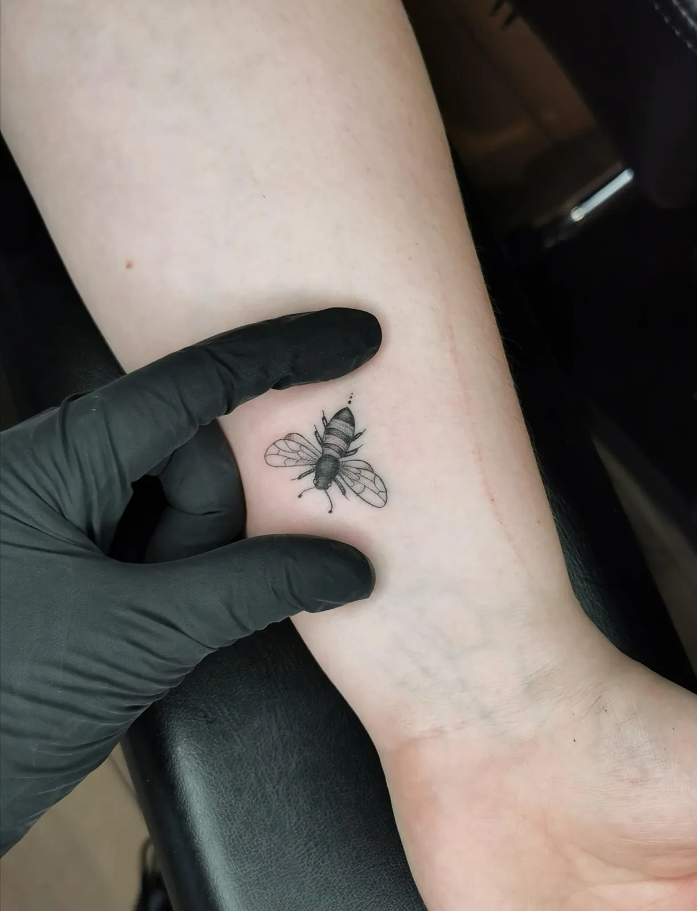
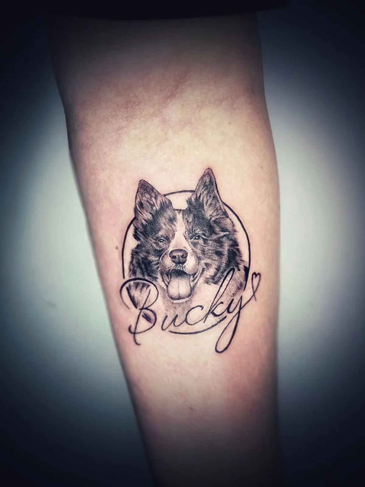
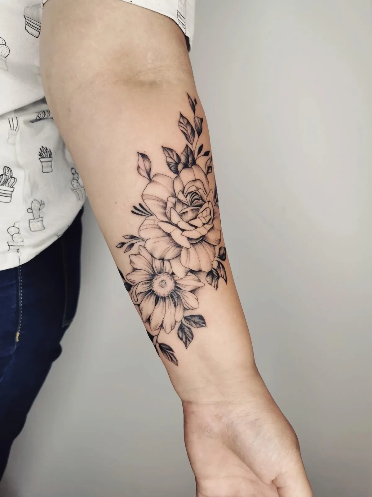
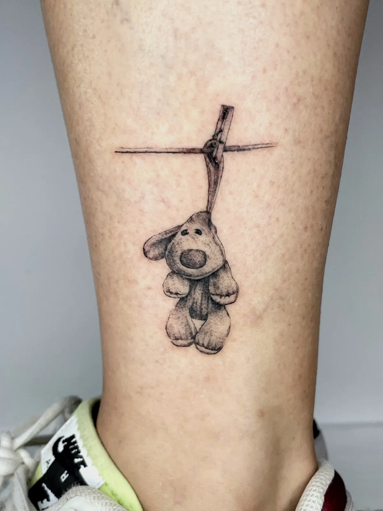
Nieuw werk verschijnt eerst op Instagram
@inktoxicated_tattoo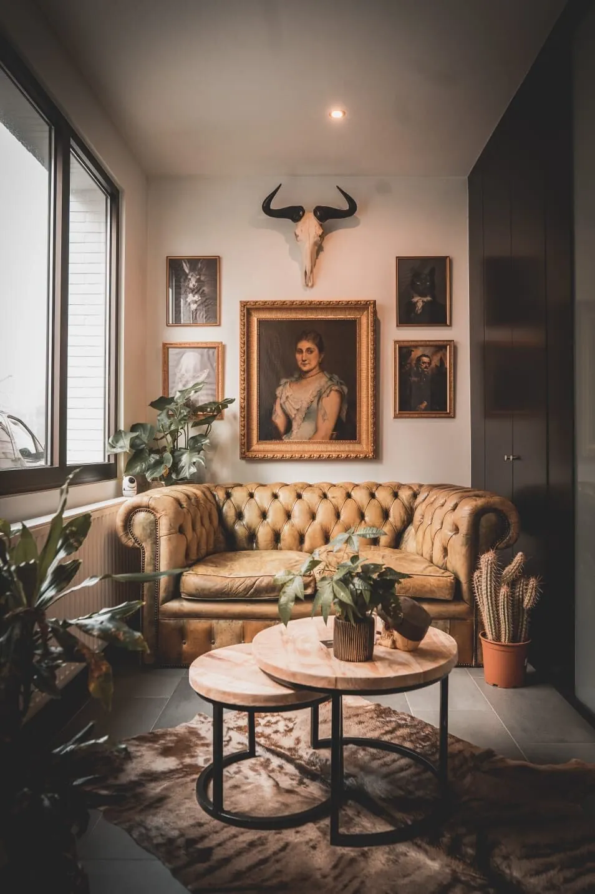
De wachtruimte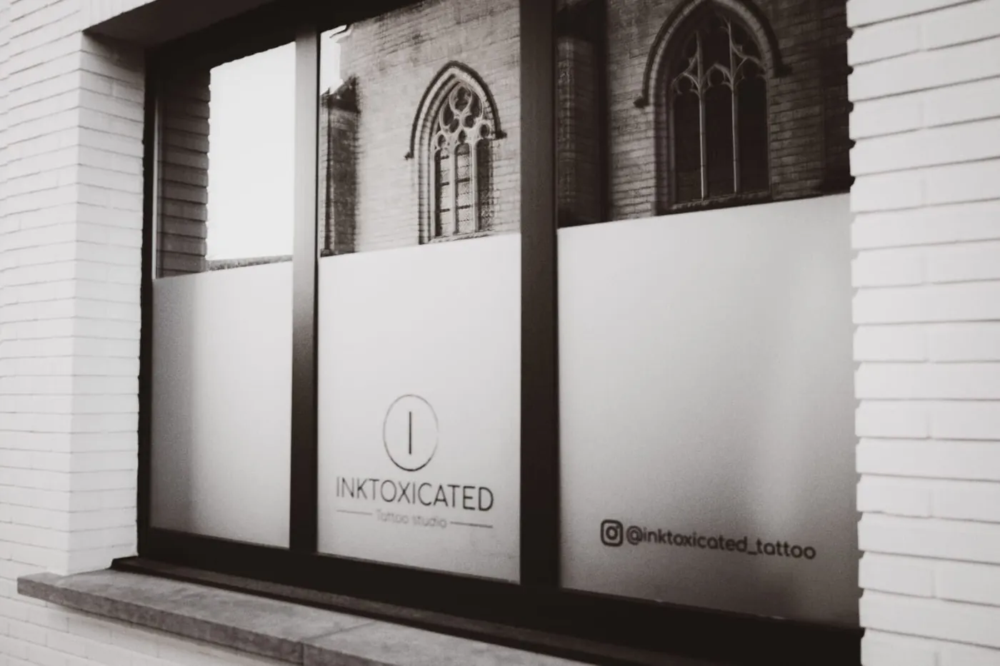
Kerkplein 8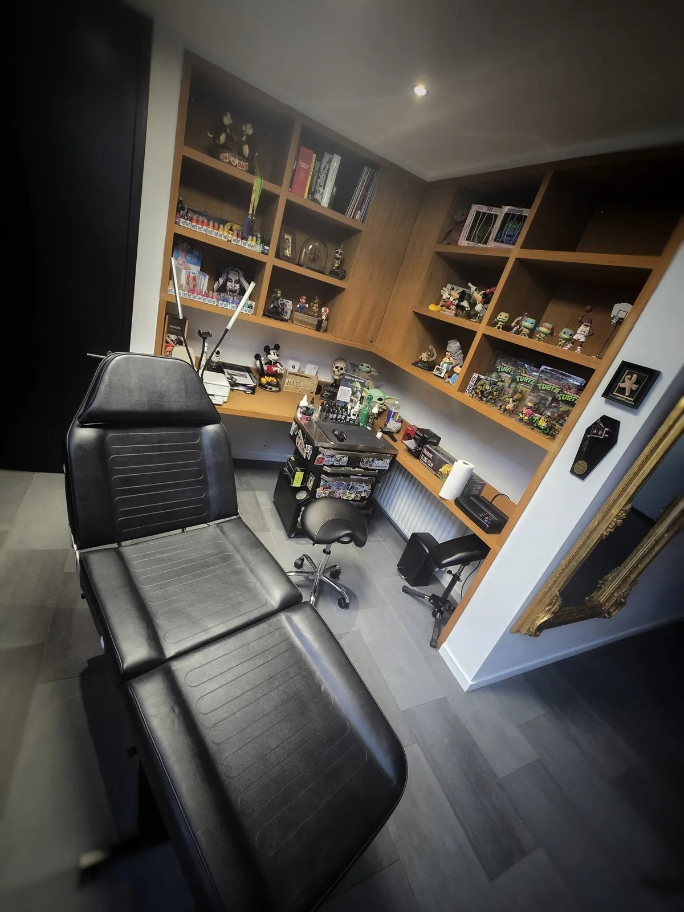
De tattooruimteEen plek om even te landen
Vanaf het moment dat je binnenstapt, weet je dat je op de juiste plaats zit. Een leren zetel, een warme kamer en iemand die tijd voor je maakt.
Hier kom je even tot rust. We bespreken je idee, beantwoorden je vragen en stemmen alles af voor we beginnen.
Ingericht voor focus, precisie en hygiëne. Elk ontwerp wordt hier met zorg gezet, in een propere en professionele omgeving.
Geen haast. Geen druk.
Van idee tot inkt
Je eerste tattoo of je twintigste: de weg is dezelfde. Rustig, duidelijk en zonder verrassingen.
Vertel je idee
Stuur een mail, een bericht op Instagram of vul het formulier in. Een paar voorbeeldfoto's en de plek waar je hem wil, helpen al veel.
Samen bespreken
In de wachtruimte overlopen we je idee, de grootte en de plaats. Al je vragen mogen op tafel.
Jouw ontwerp
Je tattoo wordt voor jou getekend. We schaven eraan tot je er honderd procent achter staat.
De dag zelf
Kom uitgerust en met een goed gevulde maag. Dan zetten we hem, rustig en geconcentreerd.
Mooi gezet.
Mooi genezen.
Een tattoo is pas af als hij goed geheeld is. Met deze tips zit je goed, voor én na je afspraak. Twijfel je? Stuur gerust een berichtje.
Kom goed voorbereid
- Geen alcohol of drugs in de 24 uur ervoor. Dat geeft meer bloedingen en de genezing gaat trager.
- Eet goed vooraf. Wie flauwvalt, heeft meestal gewoon te weinig gegeten.
- Bang voor de pijn? Een pijnstiller mag, maar overdrijf niet.
- Medicatie of allergieën? Overleg vooraf met je huisarts en zeg het ons altijd.
Eerste tattoo of ervaren verzamelaar: bij ons ben je in goede handen.
Zo verzorg je hem
- Folie erafNa 2 à 3 uur mag het kompres of de folie eraf. Douchen mag gewoon.
- Zacht wassenMet propere handen en een milde, ongeparfumeerde zeep.
- Droog deppenMet een propere handdoek, en dan nog 10 minuten laten drogen.
- Dun insmerenMet tattoozalf. Herhaal dit 3 keer per dag, 10 dagen lang.
Na ongeveer zes weken is alles genezen. Ook daarna: altijd zonnecrème op je tattoo. Erg rood, gezwollen of pijnlijk? Contacteer je huisarts.
Vertel ons wat je in gedachten hebt
Mail ons, stuur een bericht via Instagram of vul het formulier in. Vertel wat je wil, hoe groot ongeveer en waar. Dan nemen we contact met je op.
Gemiddelde score uit 53 reviews op Google